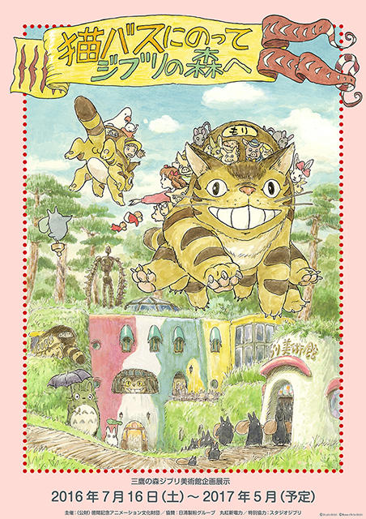

Ghibli Museum, Mitaka
1 Chome-1-83 Shimorenjaku, Mitaka, Tokyo 181-0013, Japan
The Ghibli Museum in Mitaka is the official Museum of Studio Ghibli, designed and invisioned by Studio Ghibli's founder: Hayao Miyazaki! Thanks to your support, the Ghibli Museum, Mitaka, is celebrating its 15th year anniversary! Some visitors who were school children when we first opened are now parents, and we are pretty sure we see some of those first visitors bringing their kids to the Museum. Every year we have presented a new annual exhibition at the museum here in Mitaka, unique to Studio Ghibli's flims- that makes 14 in total! We started in 2001 with the "Spirited Away Exhibit", and our exhibitions have included 2005's "Heidi - Production Artists at Work Exhibit", 2009's "Ponyo on the Cliff by the Sea - Making a Film with Pencils" exhibition and 2011's "The View from the Cat Bus - A Special Exhibition", introducing to our visitors our thoughts on how animation is created. Other exhibitions, including the "'Castle in the Sky' and Imaginary Science Fiction Machines Exhibit" in 2002, "The Three Bears Exhibit" in 2007 and "The Nutcracker and The Mouse King - A Fairy Tale Treasure" exhibit in 2014, presented seeds of imagination and new ways to look at animation. For our newest exhibition we have taken another look at all of our past exhibitions to revisit key themes and reimagine our presentations. After going deep into our warehouse to extract hidden treasures, we have stuffed our exhibition space with a collage of items and images from all of our exhibitions... including some old favorites including the gigantic Three Bears and a huge Cat Bus for everyone to board. After a long closure, the Museum has reapplied its makeup and is freshly renewed and newly painted. Concentrating fifteen years of exhibitions into one space, we will be delighted for you to feel the passion and dedication of our animators and creators at Studio Ghibli. Exhibition period: July 16, 2016 (Saturday) to May 2017 (closing date to be confirmed) Purchase your tickets now to visit the Ghibli Museum in Mitaka, Japan!
Organizer: The Tokuma Memorial Cultural Foundation for Animation
Special Collaboration: Studio Ghibli
Supporters: Nisshin Seifun Group Inc., Marubeni Power Retail Corporation
The Museum is closed every Tuesday, except on these Tuesdays:
Tickets for October 1 and 2, 2016 are only available to residents of Mitaka city and other neighboring cities. The Museum is also closed at Year-end and for New Year's Holidays, and for periodic maintenance: